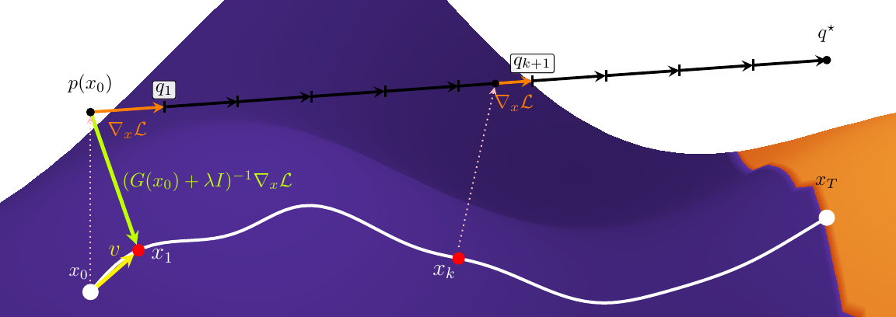

2026 · arXiv:2605.06404
FRInGe: Distribution-Space Integrated Gradients with Fisher–Rao Geometry
A Fisher–Rao-based attribution method that defines references and interpolation in predictive distribution space, improving calibration-oriented explanation metrics across ImageNet models.